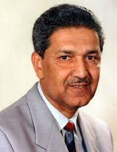

Dr.Abdul Qadeer Khan
1936-2021
Father of Pakistan's Atomic Bomb
Dr. Abdul Qadeer Khan, often referred to as the father of
Pakistan's nuclear program, is a renowned scientist and national
hero. Born in 1936 in Bhopal, India, Khan's contributions to
Pakistan's defense capabilities have left an indelible mark on the
country's history. Educated in Europe and Canada, Khan returned to
Pakistan in the 1970s and spearheaded the development of Pakistan's
nuclear weapons program. His pivotal role in achieving nuclear
capability made him a celebrated figure among Pakistanis, earning
him both admiration and controversy. Despite facing international
scrutiny and sanctions, Khan remained steadfast in his dedication to
Pakistan's security interests. However, his later years were mired
in controversy due to allegations of nuclear proliferation.
Regardless of the controversies surrounding his legacy, Dr. Abdul
Qadeer Khan's contributions to Pakistan's scientific advancement and
national defense remain significant and continue to shape the
country's identity on the global stage.
Biographies
-
Dr. Abdul Qadeer Khan was born on April 27, 1936, in Bhopal,
India.
- He moved to Pakistan after its independence in 1947.
-
Khan studied at Saint Anthony's High School in Lahore and then
enrolled at the D.J. Science College in Karachi.
-
In 1956, he moved to West Germany to study metallurgical
engineering at the Technical University of Berlin.
-
He later obtained a Bachelor of Science degree in physics and a
Bachelor of Engineering degree in metallurgical engineering from
the University of Karachi in 1960.
-
Khan earned a Master of Science degree in metallurgical
engineering from Delft University of Technology in the Netherlands
in 1967.
-
In the early 1970s, Khan joined the Pakistan Atomic Energy
Commission (PAEC), where he worked on various metallurgical
projects.
-
He played a crucial role in establishing Pakistan's uranium
enrichment program, which eventually led to the country's nuclear
weapons capability.
-
Khan became a national hero in Pakistan after the successful
nuclear tests in 1998.
-
Despite his achievements, Khan faced allegations of involvement in
nuclear proliferation activities, particularly with North Korea,
Iran, and Libya.